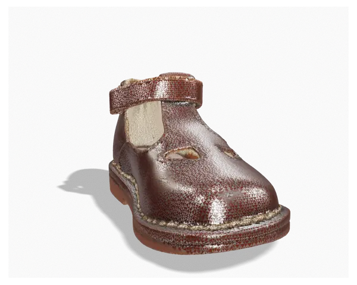
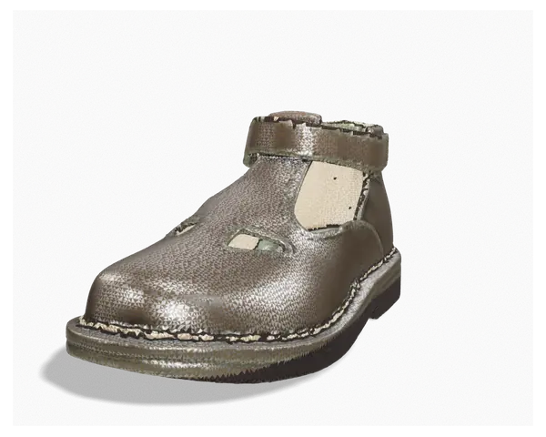
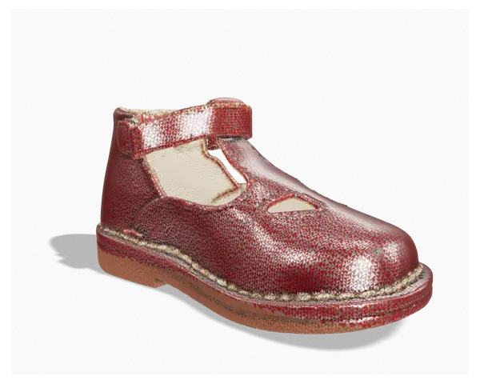

Nasce l'Antica Calzoleria Eureka
Dalla passione della famiglia Forzinetti. Mario Forzinetti commissiona a un illustre pediatra una forma in legno con tutti i requisiti del piede infantile: è il primo gesto di un metodo che non è mai cambiato.
Milano 1878 · Montegranaro oggi
Il sandalo che ha imparato a camminare prima di noi. Nato da una forma in legno disegnata con un pediatra, cucito a mano una paia alla volta — ancora oggi.
Trascina per girarlo
L'origine
«Eureka!» — lo dicevano i clienti, non il pubblicitario. Il nome del marchio è nato dalla meraviglia della gente.
Nel 1878, a Milano, Mario Forzinetti chiese a un illustre pediatra dell'epoca di disegnare una forma in legno che rispettasse davvero il piede di un bambino. Da quella forma nacque un sandalo con due piccole aperture sulla punta: due occhi che lasciano respirare il piede e guardano avanti.
La nostra storia
Dalla passione della famiglia Forzinetti. Mario Forzinetti commissiona a un illustre pediatra una forma in legno con tutti i requisiti del piede infantile: è il primo gesto di un metodo che non è mai cambiato.
La tomaia si apre in due piccoli occhi: il piede respira, la pelle si adatta, la scarpa accompagna la crescita. Negli anni gli occhi diventeranno anche cuori e stelle — ma la mano che li taglia resta la stessa.
L'azienda passa alla famiglia Medori, nel cuore del distretto calzaturiero marchigiano. Andrea e Mauro rilanciano il sandalo senza toccarne l'anima: stessa costruzione, stessa lentezza, stessa cura.
Uno stabilimento nel centro di Montegranaro, dieci artigiani, circa duecento paia al giorno di costruzione «ideale». Nessun robot ha mai imparato a fare questo nodo.
Si apre soltanto a mano
Il fatto a mano
La costruzione «ideale» non si può accelerare: ogni paio passa di mano in mano, e ogni mano lascia una firma che non si vede ma si sente sotto il piede.
Si parte dal legno, non dal disegno. La forma è la scarpa prima della scarpa.
Pelli di prima scelta, tagliate a mano seguendo la fibra: ogni pezzo ha il suo verso.
I due fori in punta: fustellati, rifiniti, allineati a occhio. Cuori e stelle su richiesta.
Punto dopo punto, con il filo cerato. È qui che la scarpa decide quanto vivrà.
Tomaia e fondo si sposano sulla forma. Interamente manuale, senza scorciatoie.
Cera, spazzola, controllo. Esce solo quello che rifaremmo per un figlio.
Collezioni

L'originale. Pelle pieno fiore, fondo cucito, gli occhietti aperti sulla punta.
L'archetipo
La versione invernale: suola Vibram tagliata a mano, fodera in lana tartan o vitello beige.
Autunno · InvernoCaviglia alta, stessa costruzione ideale. Per i primi passi che incontrano il freddo.
Il primo inverno
Vitello, trapper, camoscio, montone lavato, laminati, vernici, velluto. Tu scegli, noi cuciamo.
Su misura · 15 giorniConfigura
Ogni paio viene tagliato dopo l'ordine. Quindici giorni di attesa sono il tempo che serve a una mano per farlo bene.
Dal banco da lavoro